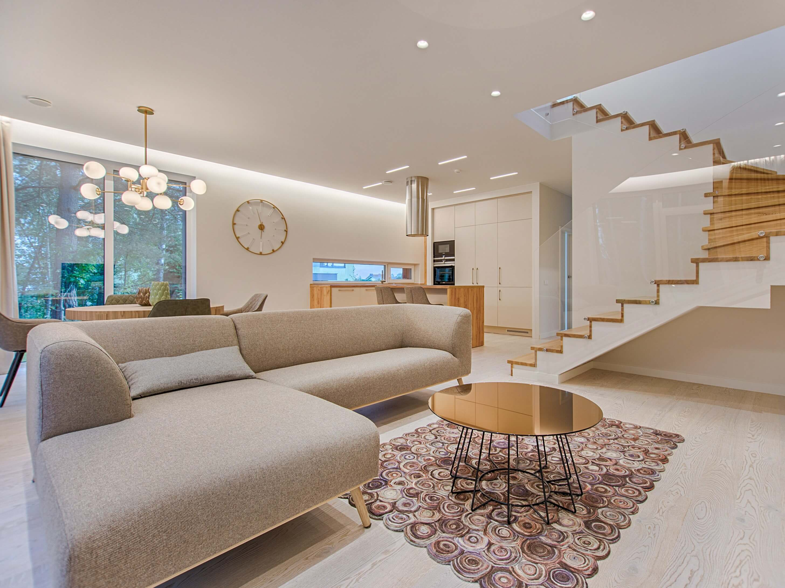
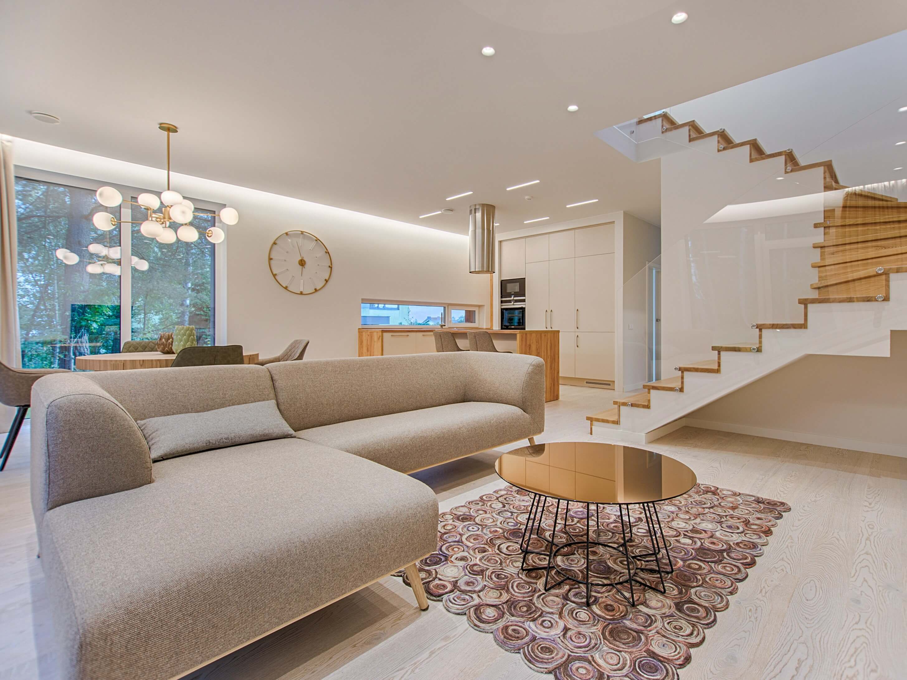

Atracción de clientes potenciales
Al ofrecer fotografías profesionales de alta calidad, las inmobiliarias generan un mayor interés entre los posibles compradores, lo que conduce a un aumento en las visitas a las propiedades y, en última instancia, a una mayor probabilidad de cierre de ventas.
Diferenciación y prestigio
La fotografía profesional agrega valor a la imagen de una inmobiliaria, destacándola entre la competencia. Los clientes perciben a una empresa que invierte en presentar sus propiedades de manera visualmente atractiva como más profesional y confiable.
Mayor visibilidad en linea
Las imágenes de calidad impulsan el posicionamiento en los motores de búsqueda y las redes sociales, lo que aumenta la visibilidad en línea de las propiedades y, por ende, de la inmobiliaria.
Eficiencia en la captación de clientes
Al mostrar imágenes precisas y detalladas desde el principio, las agencias inmobiliarias pueden filtrar a los clientes realmente interesados, ahorrando tiempo y recursos tanto para los agentes como para los compradores.